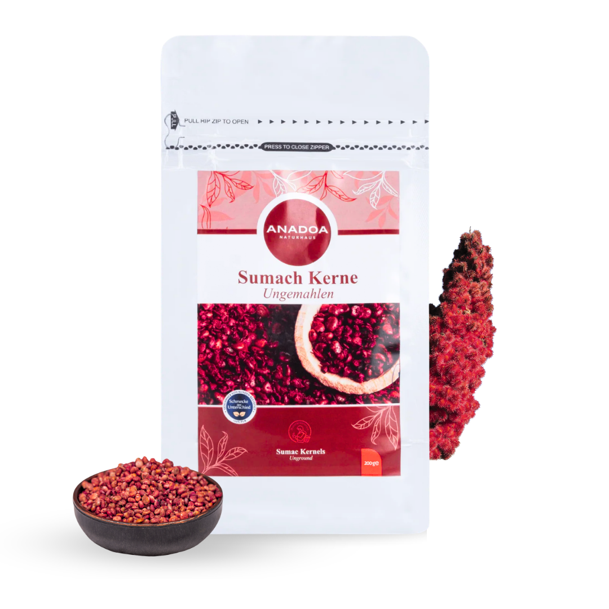

Was sind Sumach Kerne?
Sumach (Rhus coriaria) ist eines der ältesten und faszinierendsten Gewürze des Nahen Ostens und Anatoliens. Während die meisten Menschen Sumach nur als dunkelrotes Pulver kennen, bieten wir Ihnen hier die ungemahlenen, ganzen Sumach Kerne an. Diese kleinen, dunkelroten bis braunen Beeren sind die reinste und ursprünglichste Form dieses Gewürzes.
Ganze Sumach Kerne behalten ihre ätherischen Öle, ihr tief-fruchtiges Aroma und ihre feine Säure deutlich länger als gemahlenes Pulver. In der traditionellen anatolischen Küche werden sie oft nicht direkt gegessen, sondern dienen als Basis für aromatische Auszüge, Tees oder als Grundlage für den berühmten selbstgemachten Sumach-Extrakt (Sumak Ekşisi).
Verwendung in der traditionellen Küche
Ungemahlene Sumach Kerne eröffnen Ihnen in der Küche völlig neue, authentische Möglichkeiten. Die häufigste Verwendungsmethode ist die Mazeration in heißem (nicht kochendem) Wasser: Geben Sie einen Esslöffel der Kerne in eine Schale mit warmem Wasser und lassen Sie diese für 15-30 Minuten ziehen. Die Kerne geben ihre wunderbar fruchtige, leicht herbe Säure und ihre rote Farbe an das Wasser ab.
Dieses aromatisierte "Sumach-Wasser" wird anschließend durch ein Sieb gegossen und als natürliche, flüssige Säurequelle für Salate (wie Fattoush), gefüllte Weinblätter (Dolma), Eintöpfe oder Marinaden für Fleisch verwendet. Es ersetzt Zitronensaft oder Essig auf eine viel komplexere, fruchtigere Art und Weise.
Gesundheitliche Vorteile der Sumach-Beere
Sumach ist nicht nur eine kulinarische Bereicherung, sondern auch ein echtes Superfood. In der Naturheilkunde wird Sumach aufgrund seines extrem hohen Gehalts an Antioxidantien (insbesondere Anthocyane und Tannine) geschätzt. Der ORAC-Wert (Maß für die antioxidative Kapazität) von Sumach gehört zu den höchsten aller bekannten Gewürze und Früchte.
Ein traditioneller Aufguss aus ganzen Sumach Kernen wird in Anatolien oft nach schweren, fettigen Mahlzeiten getrunken, um die Verdauung zu unterstützen. Zudem wird ihm eine leicht entzündungshemmende und blutzuckerregulierende Wirkung nachgesagt.
Unsere kompromisslose Anadoa Qualität
Ganze Sumach Kerne zu kaufen, ist die beste Garantie für absolute Reinheit. Auf dem Gewürzmarkt wird gemahlener Sumach leider sehr oft mit extrem hohen Mengen an Salz (oft bis zu 20-30%) gestreckt, um Gewicht zu schinden und die Haltbarkeit zu verlängern. Zudem wird teilweise mit Farbstoffen gearbeitet, um eine frischere Farbe vorzutäuschen.
Mit den ganzen Sumach Kernen von Anadoa Naturhaus haben Sie die Gewissheit, 100% reine, naturbelassene und sonnengetrocknete Beeren in den Händen zu halten – völlig salzfrei und ohne jegliche Zusatzstoffe.
Häufig gestellte Fragen (FAQ)
Kann ich die ganzen Kerne selbst mahlen?
Ja, Sie können die Sumach Kerne in einem Mörser oder einer elektrischen Gewürzmühle selbst mahlen. Bedenken Sie jedoch, dass sich im Inneren ein harter Kern befindet, der nicht vollständig pulverisiert wird, was für eine leicht grobe Textur sorgt.
Wurde diesen Sumach Kernen Salz hinzugefügt?
Nein, unsere ganzen Sumach Kerne sind zu 100% rein und naturbelassen. Es wird absolut kein Salz hinzugefügt.
Wie bereite ich Sumach-Tee zu?
Gießen Sie einen Teelöffel der ganzen Kerne mit heißem Wasser auf und lassen Sie ihn für ca. 10 Minuten ziehen. Bei Bedarf können Sie den Tee mit etwas Honig süßen – ein wunderbar wärmendes, vitaminreiches Getränk für die kalte Jahreszeit.